Primary OOF cohort N=23. Validation passed: True.
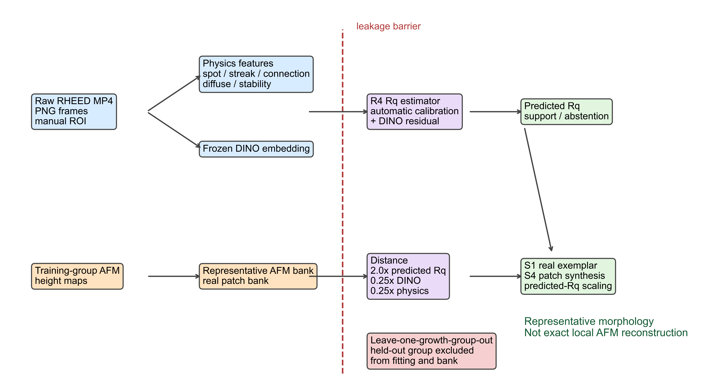

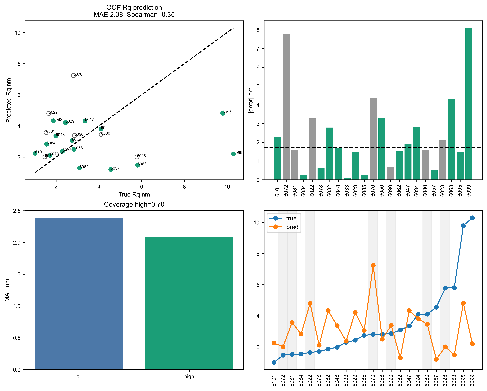
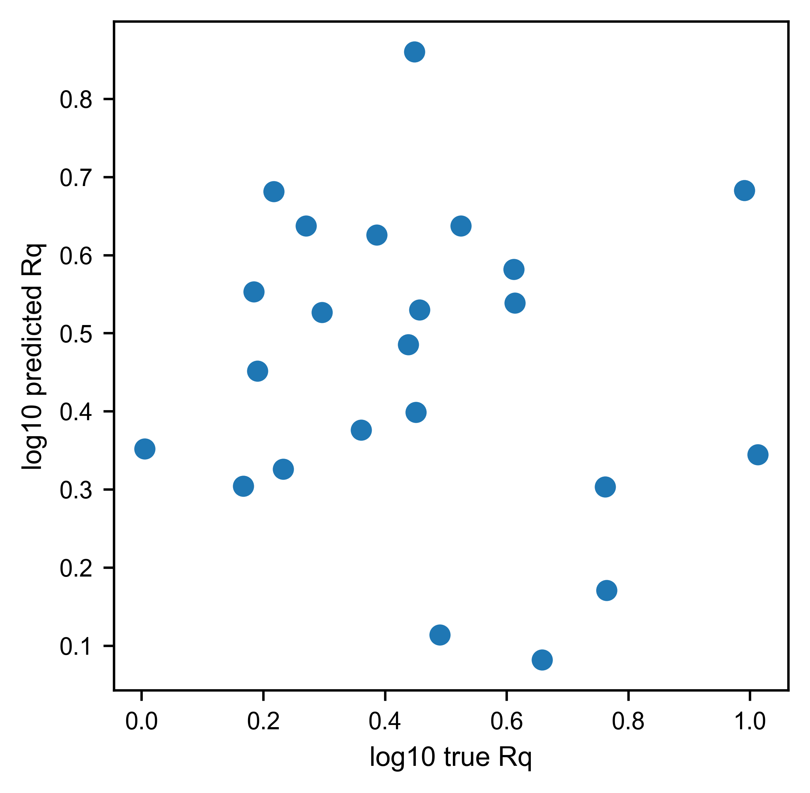
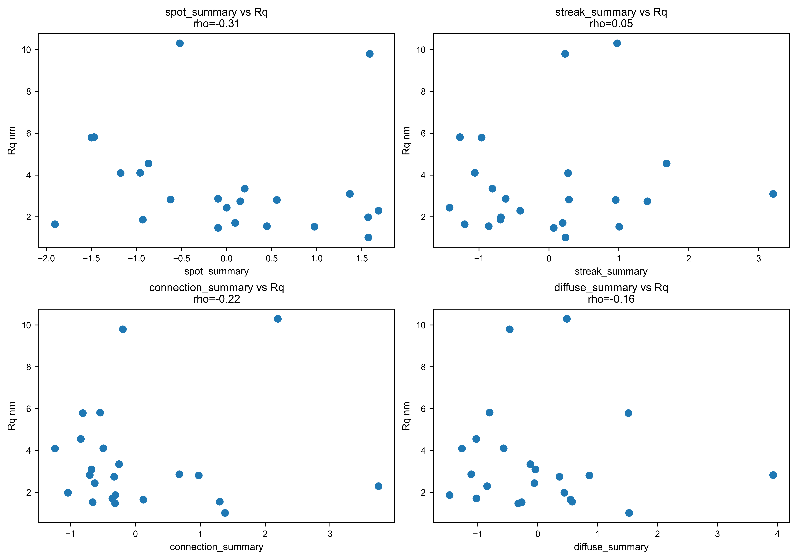
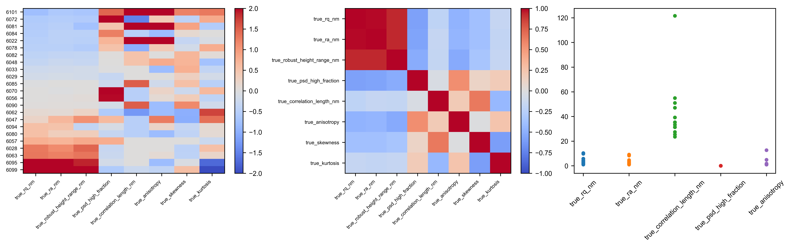
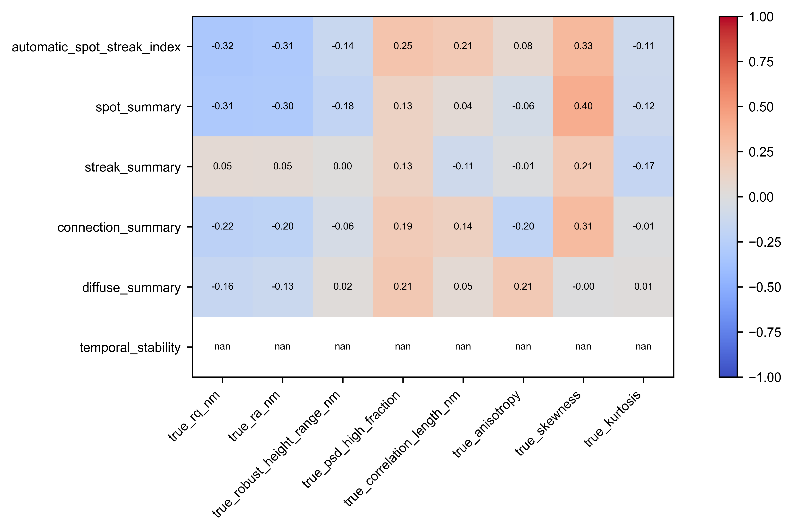
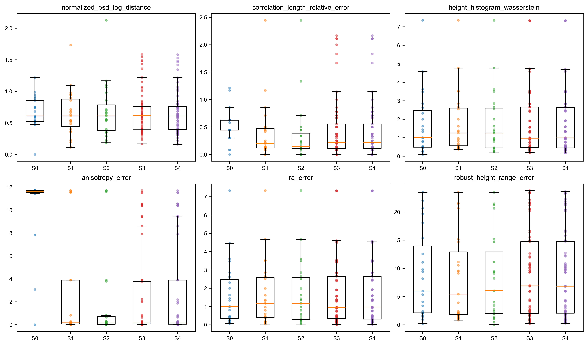
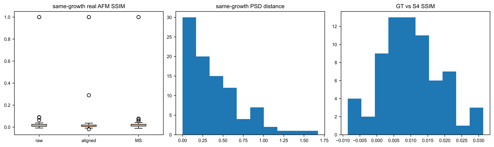
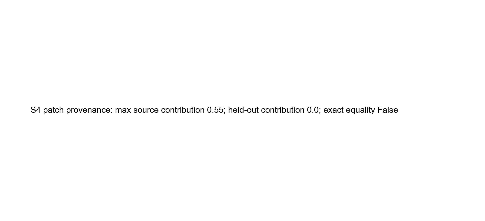


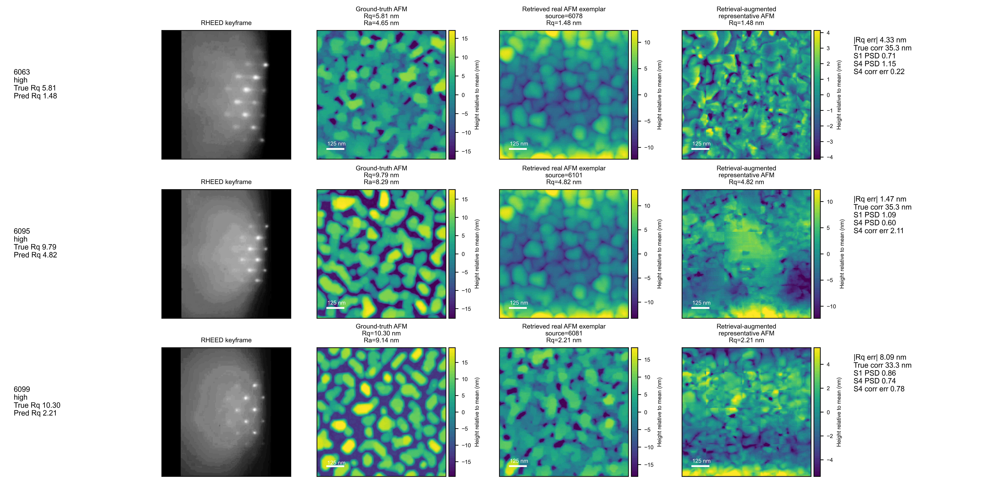
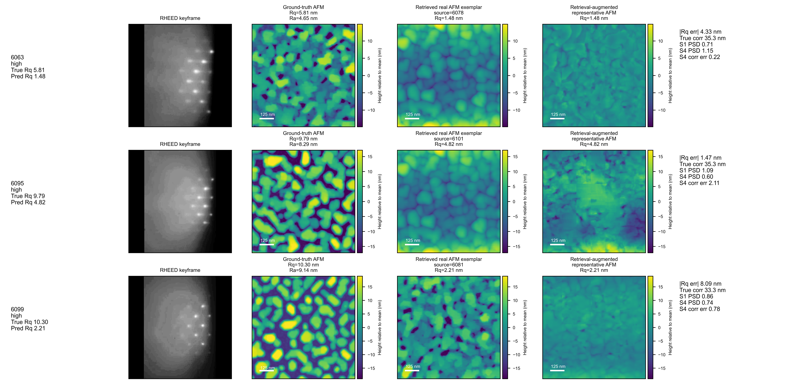


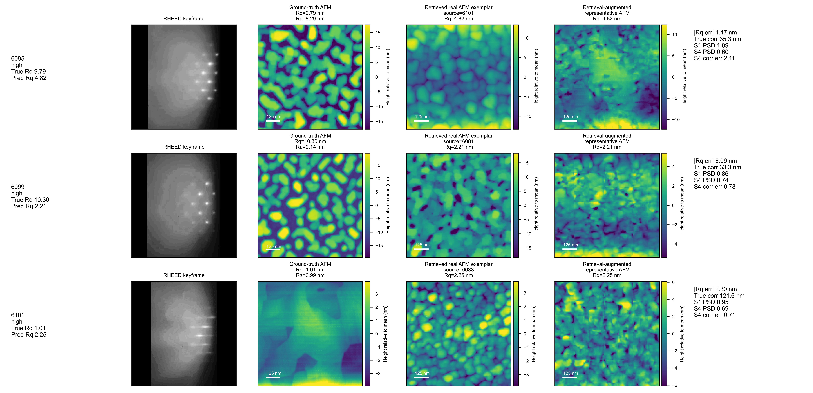
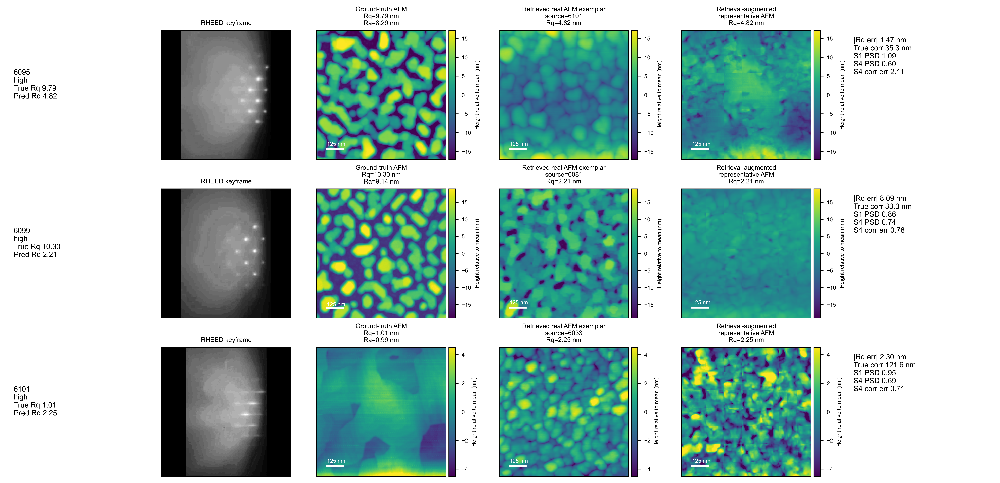

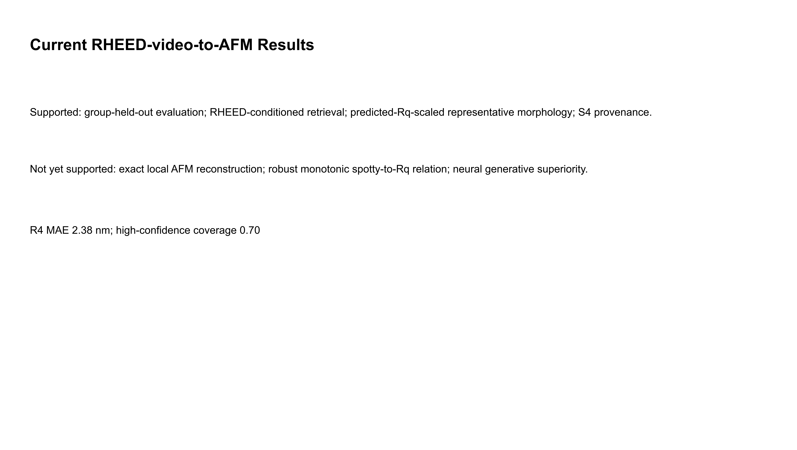
| sample_id | growth_run_id | growth_stage | video_stage | keyframe_index | clip_start_index | clip_end_index | roi_width | roi_height | support_level | high_confidence | quality_flags | true_rq_nm | predicted_rq_nm | rq_absolute_error_nm | rq_relative_error | true_ra_nm | true_robust_height_range_nm | true_correlation_length_nm | true_psd_high_fraction | true_psd_slope | true_anisotropy | true_skewness | true_kurtosis | automatic_spot_streak_index | spot_summary | streak_summary | connection_summary | diffuse_summary | temporal_stability | s1_source_sample_id | s1_source_afm_path | s1_output_rq_nm | s1_rq_error_nm | s1_psd_distance | s1_correlation_length_relative_error | s1_histogram_wasserstein | s1_anisotropy_error | s4_output_path | s4_output_rq_nm | s4_rq_error_nm | s4_psd_distance | s4_correlation_length_relative_error | s4_histogram_wasserstein | s4_anisotropy_error | s4_largest_source_contribution | s4_source_group_count | s4_exact_pixel_equality | s4_heldout_source_contribution | ground_truth_afm_path | rheed_keyframe_path | clip_preview_path | expert_labels_status |
|---|---|---|---|---|---|---|---|---|---|---|---|---|---|---|---|---|---|---|---|---|---|---|---|---|---|---|---|---|---|---|---|---|---|---|---|---|---|---|---|---|---|---|---|---|---|---|---|---|---|---|---|---|
| 6022 | 6022 | GaSb | GaSb | 757 | 750 | 765 | 249 | 391 | abstain | False | NaN | 1.649 | 4.803 | 3.274 | 1.985 | 1.303 | 7.532 | 54.902 | 0.000 | -3.582 | 1.818 | -0.543 | 3.319 | -0.427 | -1.905 | -1.204 | 0.122 | 0.547 | NaN | 6090 | data/afm_second_order/6090/N6090_1um_001/N6090_1um_001_height.npy | 4.803 | 3.274 | 0.544 | 0.143 | 2.550 | 0.818 | outputs/rheed_video_afm_story/variants/afm_second_order_y2_v1/phase4a/synthesized_afm_maps/6022_S4_calibrated_patch_synthesis_seed29.npy | 4.803 | 3.274 | 0.570 | 0.143 | 2.427 | 0.818 | 0.453 | 3 | False | 0.000 | data/afm_second_order/6022/N6022_Ctr_000/N6022_Ctr_000_height.npy | outputs/rheed_video_afm_story/phase2a/clip_variants/keyframe_1/6022.npz | reports/rheed_video_afm_story/phase1/clip_previews/6022.png | pending |
| 6028 | 6028 | GaSb | GaSb | 350 | 343 | 358 | 406 | 665 | abstain | False | NaN | 5.783 | 2.011 | 2.096 | 0.362 | 4.456 | 29.214 | 35.294 | 0.000 | -4.101 | 1.111 | -0.608 | 3.840 | 0.218 | -1.501 | -0.962 | -0.813 | 1.514 | NaN | 6081 | data/afm_second_order/6081/N81_Ctr_000/N81_Ctr_000_height.npy | 2.011 | 2.096 | 0.535 | 0.444 | 2.847 | 11.589 | outputs/rheed_video_afm_story/variants/afm_second_order_y2_v1/phase4a/synthesized_afm_maps/6028_S4_calibrated_patch_synthesis_seed29.npy | 2.011 | 2.096 | 0.612 | 0.778 | 2.834 | 9.472 | 0.547 | 2 | False | 0.000 | data/afm_second_order/6028/N6028_1um_003/N6028_1um_003_height.npy | outputs/rheed_video_afm_story/phase2a/clip_variants/keyframe_1/6028.npz | reports/rheed_video_afm_story/phase1/clip_previews/6028.png | pending |
| 6029 | 6029 | ramp | ramp | 69 | 62 | 77 | 516 | 811 | high | True | NaN | 2.434 | 4.223 | 1.481 | 0.608 | 1.928 | 11.102 | 35.294 | 0.000 | -4.074 | 1.111 | -0.152 | 3.270 | 1.393 | 0.001 | -1.421 | -0.628 | -0.057 | NaN | 6028 | data/afm_second_order/6028/N6028_1um_003/N6028_1um_003_height.npy | 4.223 | 1.481 | 0.114 | 0.000 | 1.378 | 0.000 | outputs/rheed_video_afm_story/variants/afm_second_order_y2_v1/phase4a/synthesized_afm_maps/6029_S4_calibrated_patch_synthesis_seed29.npy | 4.223 | 1.481 | 0.789 | 0.111 | 1.330 | 0.089 | 0.453 | 3 | False | 0.000 | data/afm_second_order/6029/N6029_1um_008/N6029_1um_008_height.npy | outputs/rheed_video_afm_story/phase2a/clip_variants/keyframe_1/6029.npz | reports/rheed_video_afm_story/phase1/clip_previews/6029.png | pending |
| 6033 | 6033 | GaSb | GaSb | 662 | 655 | 670 | 570 | 910 | high | True | NaN | 2.294 | 2.376 | 0.082 | 0.036 | 1.820 | 11.141 | 35.294 | 0.000 | -4.076 | 1.000 | 0.120 | 3.094 | 1.673 | 1.684 | -0.411 | 3.748 | -0.845 | NaN | 6047 | data/afm_second_order/6047/N6047_1um_008/N6047_1um_008_height.npy | 2.376 | 0.082 | 0.401 | 0.111 | 0.433 | 0.286 | outputs/rheed_video_afm_story/variants/afm_second_order_y2_v1/phase4a/synthesized_afm_maps/6033_S4_calibrated_patch_synthesis_seed29.npy | 2.376 | 0.082 | 0.470 | 0.111 | 0.181 | 0.000 | 0.453 | 3 | False | 0.000 | data/afm_second_order/6033/N6033_1um_016/N6033_1um_016_height.npy | outputs/rheed_video_afm_story/phase2a/clip_variants/keyframe_1/6033.npz | reports/rheed_video_afm_story/phase1/clip_previews/6033.png | pending |
| 6047 | 6047 | ramp | ramp | 30 | 23 | 38 | 510 | 791 | high | True | near_static_clip | 3.349 | 4.337 | 1.902 | 0.568 | 3.528 | 24.931 | 31.373 | 0.000 | -3.768 | 1.286 | -0.943 | 4.488 | 0.946 | 0.199 | -0.809 | -0.252 | -0.124 | NaN | 6028 | data/afm_second_order/6028/N6028_1um_003/N6028_1um_003_height.npy | 4.337 | 1.902 | 0.534 | 0.125 | 0.372 | 0.175 | outputs/rheed_video_afm_story/variants/afm_second_order_y2_v1/phase4a/synthesized_afm_maps/6047_S4_calibrated_patch_synthesis_seed29.npy | 4.337 | 1.902 | 0.401 | 0.250 | 0.627 | 0.186 | 0.453 | 3 | False | 0.000 | data/afm_second_order/6047/N6047_1um_008/N6047_1um_008_height.npy | outputs/rheed_video_afm_story/phase2a/clip_variants/keyframe_1/6047.npz | reports/rheed_video_afm_story/phase1/clip_previews/6047.png | pending |
| 6048 | 6048 | ramp | ramp | 199 | 192 | 207 | 477 | 744 | high | True | NaN | 1.980 | 3.364 | 1.714 | 0.866 | 1.675 | 9.242 | 39.216 | 0.000 | -4.028 | 1.222 | 0.083 | 2.809 | 2.479 | 1.569 | -0.687 | -1.041 | 0.444 | NaN | 6095 | data/afm_second_order/6095/N6095_100_nm_001/N6095_100_nm_001_height.npy | 3.364 | 1.714 | 0.356 | 0.100 | 1.251 | 0.222 | outputs/rheed_video_afm_story/variants/afm_second_order_y2_v1/phase4a/synthesized_afm_maps/6048_S4_calibrated_patch_synthesis_seed29.npy | 3.364 | 1.714 | 0.378 | 0.200 | 0.988 | 0.222 | 0.453 | 3 | False | 0.000 | data/afm_second_order/6048/N6048_1um_026/N6048_1um_026_height.npy | outputs/rheed_video_afm_story/phase2a/clip_variants/keyframe_1/6048.npz | reports/rheed_video_afm_story/phase1/clip_previews/6048.png | pending |
| 6056 | 6056 | ramp | ramp | 161 | 154 | 169 | 599 | 894 | high | True | near_static_clip | 2.826 | 2.506 | 3.277 | 1.160 | 2.252 | 13.470 | 31.373 | 0.000 | -3.529 | 1.125 | -0.117 | 3.062 | 1.056 | -0.622 | 0.287 | -0.705 | 3.929 | NaN | 6047 | data/afm_second_order/6047/N6047_1um_008/N6047_1um_008_height.npy | 2.506 | 3.277 | 0.517 | 0.000 | 0.504 | 0.161 | outputs/rheed_video_afm_story/variants/afm_second_order_y2_v1/phase4a/synthesized_afm_maps/6056_S4_calibrated_patch_synthesis_seed29.npy | 2.506 | 3.277 | 0.460 | 0.000 | 0.319 | 0.125 | 0.453 | 3 | False | 0.000 | data/afm_second_order/6056/GdSb_N6056_ctr_013/GdSb_N6056_ctr_013_height.npy | outputs/rheed_video_afm_story/phase2a/clip_variants/keyframe_1/6056.npz | reports/rheed_video_afm_story/phase1/clip_previews/6056.png | pending |
| 6057 | 6057 | GaSb | GaSb | 83 | 76 | 91 | 360 | 571 | high | True | near_static_clip | 4.552 | 1.207 | 0.501 | 0.110 | 3.582 | 22.197 | 35.294 | 0.000 | -3.779 | 1.111 | -0.337 | 3.190 | -3.066 | -0.868 | 1.684 | -0.842 | -1.028 | NaN | 6094 | data/afm_second_order/6094/N6094_150nm_002/N6094_150nm_002_height.npy | 1.207 | 0.501 | 0.664 | 0.111 | 2.654 | 0.032 | outputs/rheed_video_afm_story/variants/afm_second_order_y2_v1/phase4a/synthesized_afm_maps/6057_S4_calibrated_patch_synthesis_seed29.npy | 1.207 | 0.501 | 0.374 | 0.222 | 2.650 | 0.032 | 0.547 | 2 | False | 0.000 | data/afm_second_order/6057/GdSb_N6057_edge_014/GdSb_N6057_edge_014_height.npy | outputs/rheed_video_afm_story/phase2a/clip_variants/keyframe_1/6057.npz | reports/rheed_video_afm_story/phase1/clip_previews/6057.png | pending |
| 6062 | 6062 | ramp | ramp | 128 | 121 | 136 | 461 | 678 | high | True | near_static_clip | 3.093 | 1.300 | 1.509 | 0.488 | 2.382 | 15.575 | 25.440 | 0.000 | -4.184 | 1.000 | -0.936 | 4.748 | -1.860 | 1.366 | 3.206 | -0.679 | -0.041 | NaN | 6094 | data/afm_second_order/6094/N6094_150nm_002/N6094_150nm_002_height.npy | 1.300 | 1.509 | 0.485 | 0.143 | 1.340 | 0.143 | outputs/rheed_video_afm_story/variants/afm_second_order_y2_v1/phase4a/synthesized_afm_maps/6062_S4_calibrated_patch_synthesis_seed29.npy | 1.300 | 1.509 | 0.758 | 0.000 | 1.347 | 0.000 | 0.453 | 3 | False | 0.000 | data/afm_second_order/6062/N62_Ctr_001/N62_Ctr_001_height.npy | outputs/rheed_video_afm_story/phase2a/clip_variants/keyframe_1/6062.npz | reports/rheed_video_afm_story/phase1/clip_previews/6062.png | pending |
| 6063 | 6063 | ramp | ramp | 186 | 179 | 194 | 539 | 777 | high | True | NaN | 5.810 | 1.482 | 4.328 | 0.745 | 4.646 | 27.814 | 35.294 | 0.000 | -4.367 | 1.125 | -0.596 | 3.561 | -0.601 | -1.471 | -1.272 | -0.546 | -0.804 | NaN | 6078 | data/afm_second_order/6078/N78_Ctr_000/N78_Ctr_000_height.npy | 1.482 | 4.328 | 0.714 | 0.222 | 3.502 | 0.042 | outputs/rheed_video_afm_story/variants/afm_second_order_y2_v1/phase4a/synthesized_afm_maps/6063_S4_calibrated_patch_synthesis_seed29.npy | 1.482 | 4.328 | 1.145 | 0.222 | 3.496 | 0.208 | 0.453 | 3 | False | 0.000 | data/afm_second_order/6063/N63_Ctr_002/N63_Ctr_002_height.npy | outputs/rheed_video_afm_story/phase2a/clip_variants/keyframe_1/6063.npz | reports/rheed_video_afm_story/phase1/clip_previews/6063.png | pending |
| 6070 | 6070 | ramp | ramp | 135 | 128 | 143 | 433 | 707 | abstain | False | very_dark;near_static_clip | 2.809 | 7.244 | 4.383 | 1.560 | 2.168 | 13.040 | 31.373 | 0.000 | -3.388 | 1.143 | -0.487 | 3.915 | 0.032 | 0.557 | 0.955 | 0.976 | 0.861 | NaN | 6063 | data/afm_second_order/6063/N63_Ctr_002/N63_Ctr_002_height.npy | 7.244 | 4.383 | 1.732 | 0.125 | 3.527 | 0.018 | outputs/rheed_video_afm_story/variants/afm_second_order_y2_v1/phase4a/synthesized_afm_maps/6070_S4_calibrated_patch_synthesis_seed29.npy | 7.244 | 4.383 | 0.511 | 0.125 | 3.453 | 0.000 | 0.453 | 3 | False | 0.000 | data/afm_second_order/6070/N69_Edg_002/N69_Edg_002_height.npy | outputs/rheed_video_afm_story/phase2a/clip_variants/keyframe_1/6070.npz | reports/rheed_video_afm_story/phase1/clip_previews/6070.png | pending |
| 6072 | 6072 | ramp | ramp | 327 | 320 | 335 | 527 | 815 | abstain | False | NaN | 1.470 | 2.015 | 7.776 | 5.289 | 1.137 | 6.531 | 23.529 | 0.000 | -3.145 | 1.167 | -0.599 | 4.050 | -0.327 | -0.096 | 0.068 | -0.313 | -0.326 | NaN | 6081 | data/afm_second_order/6081/N81_Ctr_000/N81_Ctr_000_height.npy | 2.015 | 7.776 | 0.942 | 1.167 | 0.491 | 11.533 | outputs/rheed_video_afm_story/variants/afm_second_order_y2_v1/phase4a/synthesized_afm_maps/6072_S4_calibrated_patch_synthesis_seed29.npy | 2.015 | 7.776 | 0.804 | 1.667 | 0.492 | 9.417 | 0.453 | 3 | False | 0.000 | data/afm_second_order/6072/6072_500_nm_004/6072_500_nm_004_height.npy | outputs/rheed_video_afm_story/phase2a/clip_variants/keyframe_1/6072.npz | reports/rheed_video_afm_story/phase1/clip_previews/6072.png | pending |
| 6078 | 6078 | GaSb | GaSb | 364 | 357 | 372 | 440 | 711 | high | True | near_static_clip | 1.708 | 2.118 | 0.648 | 0.379 | 1.266 | 6.666 | 27.451 | 0.000 | -3.384 | 1.167 | -0.437 | 4.025 | -0.613 | 0.094 | 0.195 | -0.356 | -1.024 | NaN | 6081 | data/afm_second_order/6081/N81_Ctr_000/N81_Ctr_000_height.npy | 2.118 | 0.648 | 0.896 | 0.857 | 0.449 | 11.533 | outputs/rheed_video_afm_story/variants/afm_second_order_y2_v1/phase4a/synthesized_afm_maps/6078_S4_calibrated_patch_synthesis_seed29.npy | 2.118 | 0.648 | 0.794 | 0.857 | 0.437 | 10.379 | 0.453 | 3 | False | 0.000 | data/afm_second_order/6078/N78_Ctr_000/N78_Ctr_000_height.npy | outputs/rheed_video_afm_story/phase2a/clip_variants/keyframe_1/6078.npz | reports/rheed_video_afm_story/phase1/clip_previews/6078.png | pending |
| 6080 | 6080 | ramp | ramp | 46 | 39 | 54 | 504 | 790 | abstain | False | NaN | 4.107 | 3.456 | 1.592 | 0.388 | 2.858 | 16.821 | 31.373 | 0.000 | -4.310 | 1.000 | -0.582 | 3.471 | -0.185 | -0.960 | -1.060 | -0.496 | -0.569 | NaN | 6090 | data/afm_second_order/6090/N6090_1um_001/N6090_1um_001_height.npy | 3.456 | 1.592 | 0.685 | 0.500 | 0.618 | 0.000 | outputs/rheed_video_afm_story/variants/afm_second_order_y2_v1/phase4a/synthesized_afm_maps/6080_S4_calibrated_patch_synthesis_seed29.npy | 3.456 | 1.592 | 1.464 | 0.375 | 0.351 | 0.000 | 0.453 | 3 | False | 0.000 | data/afm_second_order/6080/N80_Ctr_000/N80_Ctr_000_height.npy | outputs/rheed_video_afm_story/phase2a/clip_variants/keyframe_1/6080.npz | reports/rheed_video_afm_story/phase1/clip_previews/6080.png | pending |
| 6081 | 6081 | ramp | ramp | 135 | 128 | 143 | 447 | 772 | abstain | False | near_static_clip | 1.529 | 3.572 | 1.591 | 1.040 | 1.219 | 4.778 | 50.980 | 0.000 | -3.245 | 12.700 | 0.207 | 2.945 | -0.165 | 0.974 | 1.005 | -0.660 | -0.267 | NaN | 6090 | data/afm_second_order/6090/N6090_1um_001/N6090_1um_001_height.npy | 3.572 | 1.591 | 0.610 | 0.077 | 1.623 | 11.700 | outputs/rheed_video_afm_story/variants/afm_second_order_y2_v1/phase4a/synthesized_afm_maps/6081_S4_calibrated_patch_synthesis_seed29.npy | 3.572 | 1.591 | 0.329 | 0.077 | 1.598 | 11.700 | 0.453 | 3 | False | 0.000 | data/afm_second_order/6081/N81_Ctr_000/N81_Ctr_000_height.npy | outputs/rheed_video_afm_story/phase2a/clip_variants/keyframe_1/6081.npz | reports/rheed_video_afm_story/phase1/clip_previews/6081.png | pending |
| 6082 | 6082 | ramp | ramp | 39 | 32 | 47 | 585 | 805 | high | True | NaN | 1.864 | 4.338 | 2.788 | 1.496 | 1.462 | 8.932 | 39.216 | 0.000 | -4.005 | 1.111 | 0.077 | 3.450 | -0.974 | -0.930 | -0.692 | -0.310 | -1.472 | NaN | 6090 | data/afm_second_order/6090/N6090_1um_001/N6090_1um_001_height.npy | 4.338 | 2.788 | 0.225 | 0.200 | 2.001 | 0.111 | outputs/rheed_video_afm_story/variants/afm_second_order_y2_v1/phase4a/synthesized_afm_maps/6082_S4_calibrated_patch_synthesis_seed29.npy | 4.338 | 2.788 | 0.399 | 0.100 | 1.928 | 0.020 | 0.453 | 3 | False | 0.000 | data/afm_second_order/6082/N6082_1um_001/N6082_1um_001_height.npy | outputs/rheed_video_afm_story/phase2a/clip_variants/keyframe_1/6082.npz | reports/rheed_video_afm_story/phase1/clip_previews/6082.png | pending |
| 6084 | 6084 | ramp | ramp | 241 | 234 | 249 | 450 | 709 | high | True | near_static_clip | 1.551 | 2.828 | 0.265 | 0.171 | 1.274 | 7.695 | 31.373 | 0.000 | -3.793 | 1.000 | -0.259 | 3.392 | 1.594 | 0.446 | -0.862 | 1.300 | 0.574 | NaN | 6029 | data/afm_second_order/6029/N6029_1um_008/N6029_1um_008_height.npy | 2.828 | 0.265 | 0.975 | 0.125 | 0.968 | 0.111 | outputs/rheed_video_afm_story/variants/afm_second_order_y2_v1/phase4a/synthesized_afm_maps/6084_S4_calibrated_patch_synthesis_seed29.npy | 2.828 | 0.265 | 0.262 | 0.125 | 0.930 | 0.000 | 0.453 | 3 | False | 0.000 | data/afm_second_order/6084/N6084_1um_005/N6084_1um_005_height.npy | outputs/rheed_video_afm_story/phase2a/clip_variants/keyframe_1/6084.npz | reports/rheed_video_afm_story/phase1/clip_previews/6084.png | pending |
| 6085 | 6085 | ramp | ramp | 320 | 313 | 328 | 516 | 735 | high | True | NaN | 2.742 | 3.059 | 0.234 | 0.085 | 2.202 | 12.920 | 47.059 | 0.000 | -4.124 | 1.083 | 0.002 | 3.017 | -1.076 | 0.150 | 1.407 | -0.328 | 0.364 | NaN | 6062 | data/afm_second_order/6062/N62_Ctr_001/N62_Ctr_001_height.npy | 3.059 | 0.234 | 0.631 | 0.417 | 0.401 | 0.083 | outputs/rheed_video_afm_story/variants/afm_second_order_y2_v1/phase4a/synthesized_afm_maps/6085_S4_calibrated_patch_synthesis_seed29.npy | 3.059 | 0.234 | 1.581 | 0.500 | 0.300 | 0.083 | 0.453 | 3 | False | 0.000 | data/afm_second_order/6085/N6085_1um_000/N6085_1um_000_height.npy | outputs/rheed_video_afm_story/phase2a/clip_variants/keyframe_1/6085.npz | reports/rheed_video_afm_story/phase1/clip_previews/6085.png | pending |
| 6090 | 6090 | ramp | ramp | 79 | 72 | 87 | 626 | 875 | abstain | False | NaN | 2.862 | 3.388 | 0.705 | 0.246 | 2.273 | 13.241 | 47.059 | 0.000 | -3.965 | 1.000 | 0.355 | 3.240 | -0.031 | -0.096 | -0.620 | 0.677 | -1.110 | NaN | 6095 | data/afm_second_order/6095/N6095_100_nm_001/N6095_100_nm_001_height.npy | 3.388 | 0.705 | 0.194 | 0.250 | 0.890 | 0.000 | outputs/rheed_video_afm_story/variants/afm_second_order_y2_v1/phase4a/synthesized_afm_maps/6090_S4_calibrated_patch_synthesis_seed29.npy | 3.388 | 0.705 | 1.216 | 0.333 | 0.522 | 0.125 | 0.453 | 3 | False | 0.000 | data/afm_second_order/6090/N6090_1um_001/N6090_1um_001_height.npy | outputs/rheed_video_afm_story/phase2a/clip_variants/keyframe_1/6090.npz | reports/rheed_video_afm_story/phase1/clip_previews/6090.png | pending |
| 6094 | 6094 | GaSb | GaSb | 244 | 237 | 252 | 592 | 866 | high | True | near_static_clip | 4.093 | 3.818 | 2.806 | 0.686 | 3.203 | 8.882 | 31.373 | 0.000 | -3.705 | 1.143 | -0.544 | 3.483 | -2.084 | -1.177 | 0.274 | -1.241 | -1.266 | NaN | 6090 | data/afm_second_order/6090/N6090_1um_001/N6090_1um_001_height.npy | 3.818 | 2.806 | 0.365 | 0.500 | 0.683 | 0.143 | outputs/rheed_video_afm_story/variants/afm_second_order_y2_v1/phase4a/synthesized_afm_maps/6094_S4_calibrated_patch_synthesis_seed29.npy | 3.818 | 2.806 | 0.330 | 0.375 | 0.402 | 0.143 | 0.453 | 3 | False | 0.000 | data/afm_second_order/6094/N6094_150nm_002/N6094_150nm_002_height.npy | outputs/rheed_video_afm_story/phase2a/clip_variants/keyframe_1/6094.npz | reports/rheed_video_afm_story/phase1/clip_previews/6094.png | pending |
| 6095 | 6095 | ramp | ramp | 181 | 174 | 189 | 631 | 906 | high | True | NaN | 9.791 | 4.815 | 1.466 | 0.150 | 8.292 | 33.999 | 35.294 | 0.000 | -4.009 | 1.000 | -0.375 | 2.015 | 1.121 | 1.586 | 0.232 | -0.194 | -0.467 | NaN | 6101 | data/afm_second_order/6101/N6101_1um_002/N6101_1um_002_height.npy | 4.815 | 1.466 | 1.095 | 2.444 | 4.764 | 3.885 | outputs/rheed_video_afm_story/variants/afm_second_order_y2_v1/phase4a/synthesized_afm_maps/6095_S4_calibrated_patch_synthesis_seed29.npy | 4.815 | 1.466 | 0.597 | 2.111 | 4.573 | 2.000 | 0.453 | 3 | False | 0.000 | data/afm_second_order/6095/N6095_100_nm_001/N6095_100_nm_001_height.npy | outputs/rheed_video_afm_story/phase2a/clip_variants/keyframe_1/6095.npz | reports/rheed_video_afm_story/phase1/clip_previews/6095.png | pending |
| 6099 | 6099 | ramp | ramp | 62 | 55 | 70 | 550 | 783 | high | True | near_static_clip | 10.296 | 2.211 | 8.085 | 0.785 | 9.136 | 35.394 | 33.268 | 0.000 | -4.117 | 1.059 | 0.007 | 1.674 | -1.253 | -0.520 | 0.976 | 2.195 | 0.486 | NaN | 6081 | data/afm_second_order/6081/N81_Ctr_000/N81_Ctr_000_height.npy | 2.211 | 8.085 | 0.856 | 0.444 | 7.349 | 11.700 | outputs/rheed_video_afm_story/variants/afm_second_order_y2_v1/phase4a/synthesized_afm_maps/6099_S4_calibrated_patch_synthesis_seed29.npy | 2.211 | 8.085 | 0.739 | 0.778 | 7.334 | 10.545 | 0.453 | 3 | False | 0.000 | data/afm_second_order/6099/N6099_1um_003/N6099_1um_003_height.npy | outputs/rheed_video_afm_story/phase2a/clip_variants/keyframe_1/6099.npz | reports/rheed_video_afm_story/phase1/clip_previews/6099.png | pending |
| 6101 | 6101 | GaSb | GaSb | 206 | 199 | 214 | 639 | 1026 | high | True | near_static_clip | 1.012 | 2.249 | 2.302 | 2.276 | 0.989 | 5.454 | 121.569 | 0.000 | -3.392 | 4.885 | 0.393 | 4.428 | 2.096 | 1.571 | 0.238 | 1.381 | 1.526 | NaN | 6033 | data/afm_second_order/6033/N6033_1um_016/N6033_1um_016_height.npy | 2.249 | 2.302 | 0.949 | 0.710 | 0.799 | 3.885 | outputs/rheed_video_afm_story/variants/afm_second_order_y2_v1/phase4a/synthesized_afm_maps/6101_S4_calibrated_patch_synthesis_seed29.npy | 2.249 | 2.302 | 0.686 | 0.710 | 0.746 | 3.885 | 0.453 | 3 | False | 0.000 | data/afm_second_order/6101/N6101_1um_002/N6101_1um_002_height.npy | outputs/rheed_video_afm_story/phase2a/clip_variants/keyframe_1/6101.npz | reports/rheed_video_afm_story/phase1/clip_previews/6101.png | pending |
| section | model | coverage | model_id | N | MAE | median_AE | RMSE | R2 | Spearman | Kendall_tau | pairwise_concordance | low_high_balanced_accuracy | high_rq_sensitivity | high_rq_specificity | afm_target_variant | footnote | abstained_count | method | seed | predicted_rq_error_nm | measured_synth_rq_nm | synth_rq_minus_predicted_rq_nm | ra_error | robust_height_range_error | height_histogram_wasserstein | ssim | lpips | morphology_prototype_agreement | normalized_psd_log_distance | psd_low_band_error | psd_mid_band_error | psd_high_band_error | psd_slope_error | correlation_length_abs_error_nm | correlation_length_relative_error | anisotropy_error | skewness_error | kurtosis_error | height_quantile_error | ra_rq_error |
|---|---|---|---|---|---|---|---|---|---|---|---|---|---|---|---|---|---|---|---|---|---|---|---|---|---|---|---|---|---|---|---|---|---|---|---|---|---|---|---|---|
| Rq prediction | R0_median | 1.000000 | R0_median | 23.0 | 1.600620 | 1.167827 | 2.503217 | -0.088353 | -0.884652 | -0.751809 | 0.217391 | 0.5000 | 0.000 | 1.000000 | second_order_y2 | LOOCV training-median rank metrics are not physically interpretable because the fold-specific median changes with the held-out sample. | NaN | NaN | NaN | NaN | NaN | NaN | NaN | NaN | NaN | NaN | NaN | NaN | NaN | NaN | NaN | NaN | NaN | NaN | NaN | NaN | NaN | NaN | NaN | NaN |
| Rq prediction | R1_dino_pls | 1.000000 | R1_dino_pls | 23.0 | 2.546085 | 1.620014 | 3.419631 | -1.031099 | -0.484190 | -0.335968 | 0.332016 | 0.3125 | 0.125 | 0.533333 | second_order_y2 | NaN | NaN | NaN | NaN | NaN | NaN | NaN | NaN | NaN | NaN | NaN | NaN | NaN | NaN | NaN | NaN | NaN | NaN | NaN | NaN | NaN | NaN | NaN | NaN | |
| Rq prediction | R4_auto_iso_dino_residual | 1.000000 | R4_auto_iso_dino_residual | 23.0 | 2.382966 | 1.714189 | 3.163154 | -0.737854 | -0.347826 | -0.249012 | 0.375494 | 0.2500 | 0.250 | 0.400000 | second_order_y2 | NaN | NaN | NaN | NaN | NaN | NaN | NaN | NaN | NaN | NaN | NaN | NaN | NaN | NaN | NaN | NaN | NaN | NaN | NaN | NaN | NaN | NaN | NaN | NaN | |
| Rq prediction | R4_high_confidence_subset | 0.695652 | R4_auto_iso_dino_residual | 16.0 | 2.086943 | 1.611720 | 2.847983 | -0.574045 | -0.217647 | -0.183333 | 0.408333 | 0.3000 | 0.200 | 0.545455 | NaN | NaN | 7.0 | NaN | NaN | NaN | NaN | NaN | NaN | NaN | NaN | NaN | NaN | NaN | NaN | NaN | NaN | NaN | NaN | NaN | NaN | NaN | NaN | NaN | NaN | NaN |
| AFM output methods | S0_unconditional_median_prototype | NaN | NaN | NaN | NaN | NaN | NaN | NaN | NaN | NaN | NaN | NaN | NaN | NaN | second_order_y2 | NaN | NaN | S0_unconditional_median_prototype | 0.0 | 1.714189 | 3.05911 | -0.000003 | 1.006368 | 5.972726 | 1.008254 | 0.009359 | NaN | NaN | 0.610291 | 0.000423 | 0.000428 | 0.000024 | 0.255719 | 15.686275 | 0.444444 | 11.588889 | 0.543873 | 0.538454 | 0.221389 | 0.013122 |
| AFM output methods | S1_top1_real_exemplar_retrieval | NaN | NaN | NaN | NaN | NaN | NaN | NaN | NaN | NaN | NaN | NaN | NaN | NaN | second_order_y2 | NaN | NaN | S1_top1_real_exemplar_retrieval | 0.0 | 1.714189 | 3.05911 | -0.000003 | 1.173318 | 5.433633 | 1.250575 | 0.011445 | NaN | NaN | 0.610291 | 0.000259 | 0.000229 | 0.000026 | 0.351891 | 7.843137 | 0.200000 | 0.160714 | 0.457246 | 0.794155 | 0.268384 | 0.023650 |
| AFM output methods | S2_topk_real_scan_medoid | NaN | NaN | NaN | NaN | NaN | NaN | NaN | NaN | NaN | NaN | NaN | NaN | NaN | second_order_y2 | NaN | NaN | S2_topk_real_scan_medoid | 0.0 | 1.714189 | 3.05911 | -0.000003 | 1.173318 | 6.036700 | 1.250575 | 0.011512 | NaN | NaN | 0.610291 | 0.000259 | 0.000229 | 0.000027 | 0.270994 | 7.843137 | 0.142857 | 0.142857 | 0.379005 | 0.464035 | 0.150106 | 0.016096 |
| AFM output methods | S3_patch_synthesis | NaN | NaN | NaN | NaN | NaN | NaN | NaN | NaN | NaN | NaN | NaN | NaN | NaN | second_order_y2 | NaN | NaN | S3_patch_synthesis | 29.0 | 1.714189 | 3.05911 | -0.000003 | 0.952570 | 6.897392 | 0.975226 | 0.009624 | NaN | NaN | 0.615132 | 0.000347 | 0.000325 | 0.000026 | 0.252642 | 7.843137 | 0.222222 | 0.142857 | 0.411746 | 0.783443 | 0.143573 | 0.020085 |
| AFM output methods | S4_calibrated_patch_synthesis | NaN | NaN | NaN | NaN | NaN | NaN | NaN | NaN | NaN | NaN | NaN | NaN | NaN | second_order_y2 | NaN | NaN | S4_calibrated_patch_synthesis | 29.0 | 1.714189 | 3.05911 | -0.000003 | 0.971030 | 6.836527 | 0.991437 | 0.009673 | NaN | NaN | 0.609278 | 0.000340 | 0.000323 | 0.000026 | 0.251271 | 7.843137 | 0.222222 | 0.142857 | 0.364641 | 0.581882 | 0.129684 | 0.016985 |
No exact AFM reconstruction claim; expert labels pending; automatic morphology index is not monotonic with Rq in this cohort.